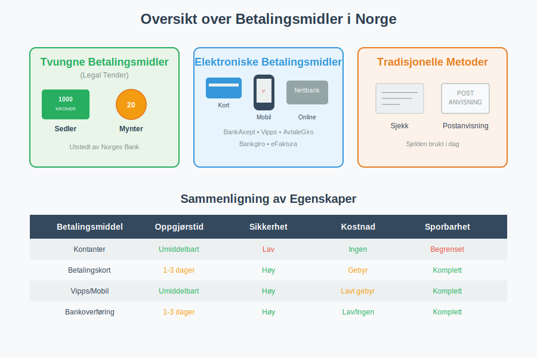
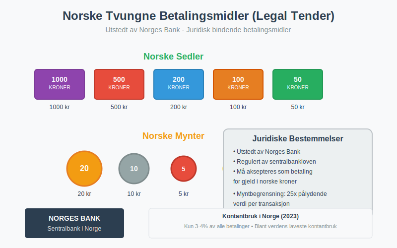
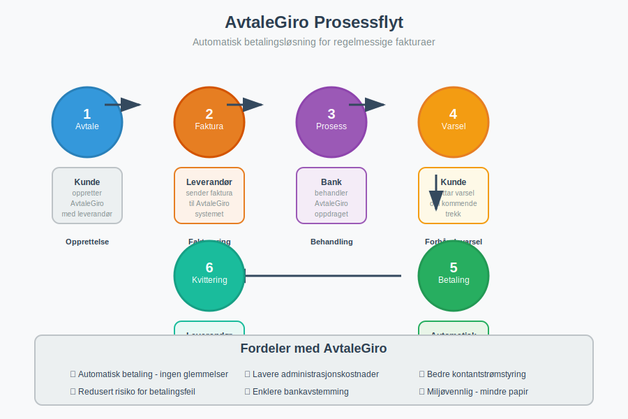
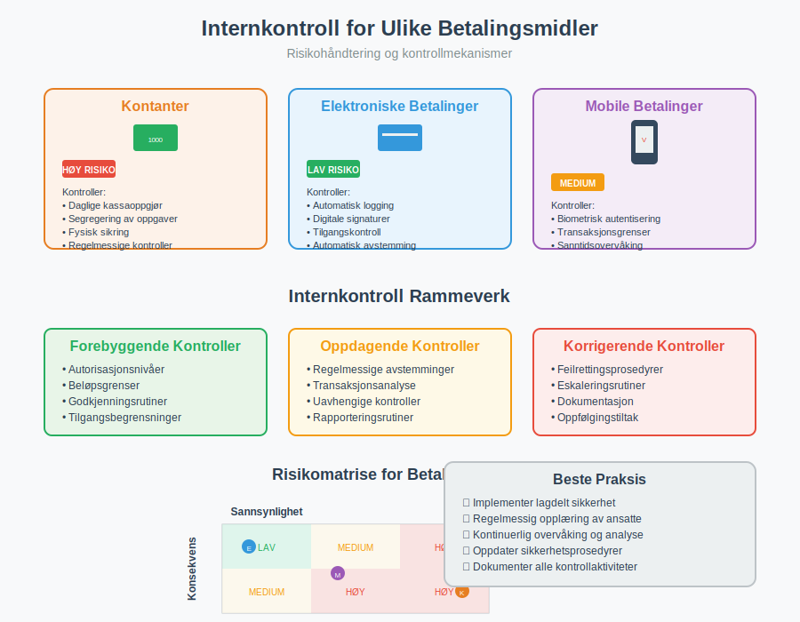

Betalingsmidler er de ulike metodene og instrumentene som kan brukes for å gjennomføre økonomiske transaksjoner og oppgjør av forpliktelser. I det moderne samfunnet har betalingslandskapet utviklet seg dramatisk, fra tradisjonelle kontanter til sofistikerte elektroniske løsninger. For bedrifter er forståelse av ulike betalingsmidler kritisk for både regnskapsføring og effektiv fakturabehandling.
Kategorisering av Betalingsmidler
Betalingsmidler kan kategoriseres på flere måter, men den mest grunnleggende inndelingen skiller mellom tvungne betalingsmidler (lovlige betalingsmidler) og frivillige betalingsmidler. I tillegg kan vi skille mellom fysiske og elektroniske betalingsformer.

Tvungne Betalingsmidler (Legal Tender)
Tvungne betalingsmidler er de betalingsformene som juridisk må aksepteres som gyldig betaling for gjeld denominert i samme valuta. I Norge er dette regulert av sentralbankloven og valutareguleringen.
Norske Kroner - Sedler og Mynter
Norges Bank har enerett til å utstede norske sedler og mynter, som utgjør Norges tvungne betalingsmidler:
- Sedler: 50, 100, 200, 500 og 1000 kroner
- Mynter: 1, 5, 10 og 20 kroner

Juridiske Begrensninger
Selv om sedler og mynter er tvungne betalingsmidler, finnes det praktiske begrensninger:
- Myntbegrensning: Mynter er kun tvungne betalingsmidler opp til 25 ganger pålydende verdi per transaksjon
- Forretningsmessige unntak: Private aktører kan nekte kontantbetaling hvis dette er tydelig kommunisert på forhånd
- Offentlige tjenester: Offentlige instanser må som hovedregel akseptere kontanter
Elektroniske Betalingsmidler
Det elektroniske betalingslandskapet i Norge er blant verdens mest utviklede, med høy adopsjonsrate og bred aksept for digitale løsninger.
Bankbaserte Elektroniske Løsninger
BankAxept og Betalingskort
BankAxept er det nasjonale debetkortsystemet i Norge, mens internasjonale kort som Visa og Mastercard også er utbredt:
| Korttype | Beskrivelse | Regnskapsføring |
|---|---|---|
| Debetkort (BankAxept) | Direkte trekk fra bankkonto | Umiddelbar reduksjon av bankinnskudd |
| Kredittkort | Kredittfasilitet med månedlig oppgjør | Kortsiktig gjeld til oppgjør |
| Bedriftskort | Firmakort for forretningsutgifter | Direkte kostnadsføring med attestering |
Nettbank og Mobilbank
Moderne bankløsninger tilbyr omfattende betalingsfunksjonalitet:
- Overføringer: Direkte overføring mellom kontoer
- Direkte remittering: Elektronisk overføring av midler direkte mellom bankkontoer
- Bankgiro: Betaling av fakturaer med KID-nummer basert på det norske giro-systemet
- Hurtigoverføring: Øyeblikkelig overføring mellom norske banker
Automatiske Betalingsløsninger
AvtaleGiro
AvtaleGiro er Norges mest brukte automatiske betalingsløsning for regelmessige fakturaer:
Fordeler for bedrifter:
- Redusert administrativt arbeid
- Færre betalingsfeil
- Bedre kontantstrømstyring
- Lavere transaksjonskostnader
Regnskapsmessige konsekvenser:
- Automatisk registrering av utbetalinger
- Enklere bankavstemming
- Bedre sporbarhet av betalinger

eFaktura
eFaktura kombinerer elektronisk fakturamottak med mulighet for automatisk betaling:
- Fakturaer mottas direkte i nettbanken
- Kunde kan velge mellom manuell godkjenning eller automatisk betaling
- Integrert med regnskapssystemer for automatisk bokføring
Mobile Betalingsløsninger
Vipps
Vipps har revolusjonert person-til-person betalinger og utvides stadig for bedriftsbruk:
Vipps-tjenester:
- Vipps Regning: Betaling av fakturaer via mobilapp
- Vipps Bedrift: Betalingsløsning for netthandel og fysiske butikker
- Vipps Faktura: Elektronisk fakturering via Vipps-plattformen
Andre Mobile Løsninger
- Apple Pay / Google Pay: Kontaktløs betaling via smarttelefon
- Samsung Pay: Samsungs betalingsløsning
- Internasjonale løsninger: PayPal, Klarna, osv.
Tradisjonelle Betalingsmidler
Kontanter
Selv om kontantbruken i Norge er blant verdens laveste, spiller kontanter fortsatt en rolle:
Fordeler:
- Umiddelbar oppgjør
- Ingen transaksjonskostnader
- Personvern
- Fungerer uten teknisk infrastruktur
Ulemper:
- Sikkerhetsrisiko
- Administrativt krevende
- Begrenset sporbarhet
- Ikke praktisk for store beløp
Sjekker
Sjekker er nesten helt faset ut i Norge, men brukes fortsatt i begrenset omfang:
- Hovedsakelig i B2B-transaksjoner
- Krever spesiell håndtering i regnskapet
- Lengre oppgjørstid
- Høyere risiko for manglende dekning
Regnskapsmessige Konsekvenser
Valg av betalingsmiddel har betydelige konsekvenser for regnskapsføring og internkontroll.
Kontantstrømstyring
Ulike betalingsmidler påvirker arbeidskapital forskjellig:
| Betalingsmiddel | Oppgjørstid | Kontantstrømspåvirkning |
|---|---|---|
| Kontanter | Umiddelbart | Øyeblikkelig likviditetsendring |
| Debetkort | 1-2 dager | Kort forsinkelse |
| Kredittkort | 2-5 dager | Forsinkelse + gebyr |
| Bankoverføring | 1-3 dager | Avhengig av bank og tidspunkt |
| AvtaleGiro | På forfallsdato | Forutsigbar kontantstrøm |
Internkontroll og Dokumentasjon
Elektroniske betalingsmidler gir generelt bedre internkontroll:
- Automatisk dokumentasjon: Alle transaksjoner logges elektronisk
- Sporbarhet: Komplett auditspor fra bestilling til betaling
- Redusert feilrisiko: Mindre manuell håndtering
- Integrerte kontroller: Automatiske avstemminger og valideringer
Kontantbetalinger krever særskilt oppmerksomhet:
- Krav til kvitteringer og bilag
- Daglige kassaoppgjør
- Segregering av oppgaver
- Regelmessige kassakontroller

Kostnadsanalyse
Ulike betalingsmidler har forskjellige kostnadsstrukturer:
Direkte Kostnader
- Kortgebyrer: Typisk 0,5-2,5% av transaksjonsbeløp
- Bankgebyrer: Faste gebyrer per transaksjon
- Abonnementsavgifter: Månedlige kostnader for betalingsterminaler
Indirekte Kostnader
- Administrasjon: Tid brukt på betalingshåndtering
- Feilkostnader: Kostnader ved feilaktige betalinger
- Sikkerhetskostnader: Forsikring og sikkerhetstiltak for kontanter
Fremtidige Utviklingstrender
Digitale Valutaer
Sentralbankens digitale valuta (CBDC) er under utredning i Norge:
- Potensielt supplement til fysiske kontanter
- Direkte utstedt av Norges Bank
- Kan kombinere fordelene ved kontanter og elektroniske betalinger
Åpen Banking (PSD2)
Betalingstjenestedirektivet (PSD2) åpner for nye aktører og tjenester:
- Tredjepartstilgang til bankkontoer gjennom åpen bankvirksomhet
- Nye betalingsløsninger og innovative tjenester
- Økt konkurranse og innovasjon i betalingsmarkedet
- Strengere sikkerhetskrav med sterk kundeautentisering (SCA)
- Betydelige konsekvenser for regnskapsføring og compliance
Blockchain og Kryptovalutaer
Selv om ikke anerkjent som lovlige betalingsmidler, påvirker blockchain-teknologi betalingslandskapet:
- Raskere grenseoverskridende betalinger
- Reduserte transaksjonskostnader
- Nye former for digitale eiendeler
For tradisjonelle internasjonale betalinger er BIC-koder og IBAN-numre fortsatt den globale standarden for sikker identifikasjon av banker og kontoer i SWIFT-nettverket.
Praktiske Råd for Bedrifter
Valg av Betalingsløsninger
Ved valg av betalingsløsninger bør bedrifter vurdere:
- Kundepreferanser: Hvilke betalingsmidler foretrekker målgruppen?
- Kostnadseffektivitet: Totalkostnad inkludert direkte og indirekte kostnader
- Integrasjon: Hvor godt integreres løsningen med eksisterende systemer?
- Sikkerhet: Risikohåndtering og compliance-krav
- Skalerbarhet: Kan løsningen vokse med bedriften?
Optimalisering av Betalingsprosesser
Automatisering er nøkkelen til effektive betalingsprosesser:
- Implementer AvtaleGiro for regelmessige betalinger
- Bruk eFaktura for å redusere manuell fakturabehandling
- Integrer betalingsløsninger med regnskapssystem
- Etabler rutiner for regelmessig avstemming
Risikohåndtering
Betalingsrisiko må håndteres systematisk:
- Diversifiser betalingsløsninger for å unngå avhengighet
- Etabler backup-løsninger for kritiske betalinger
- Implementer sterke internkontroller
- Sørg for adekvat forsikringsdekning
Konklusjon
Betalingsmidler utgjør ryggraden i det moderne økonomiske systemet. Fra tvungne betalingsmidler som norske kroner til sofistikerte elektroniske løsninger som AvtaleGiro og Vipps, tilbyr dagens betalingslandskap enorme muligheter for effektivisering og forbedret kontroll.
For bedrifter er det essensielt å forstå de ulike betalingsmidlenes karakteristika, kostnader og regnskapsmessige konsekvenser. Ved å velge riktige betalingsløsninger og implementere effektive prosesser, kan bedrifter oppnå betydelige besparelser, bedre kontantstrømstyring og redusert administrativt arbeid.
Det elektroniske betalingslandskapet vil fortsette å utvikle seg, med nye teknologier og løsninger som vil forme fremtidens betalingsmidler. Bedrifter som holder seg oppdatert og tilpasser seg disse endringene, vil være best posisjonert for fremtidig suksess.
For mer informasjon om betalingstjenester, se vår dyptgående guide til hvordan betalingstjenester fungerer og bokføres i norsk regnskap.